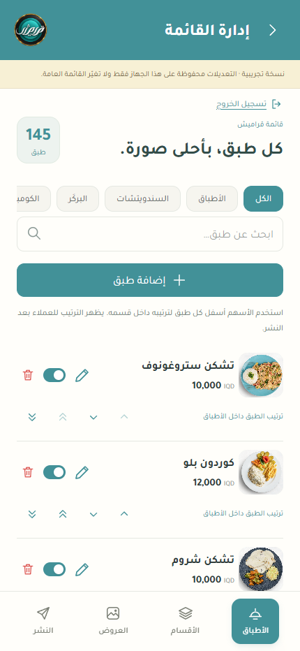
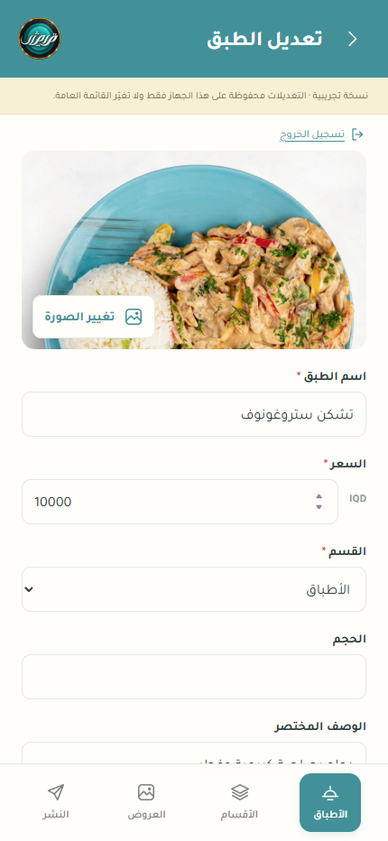
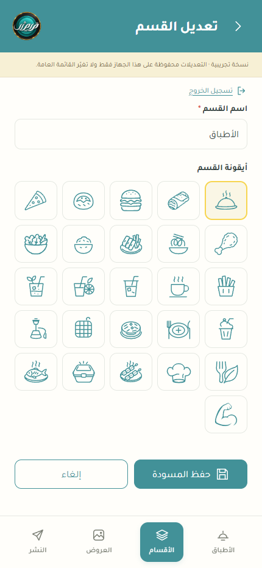
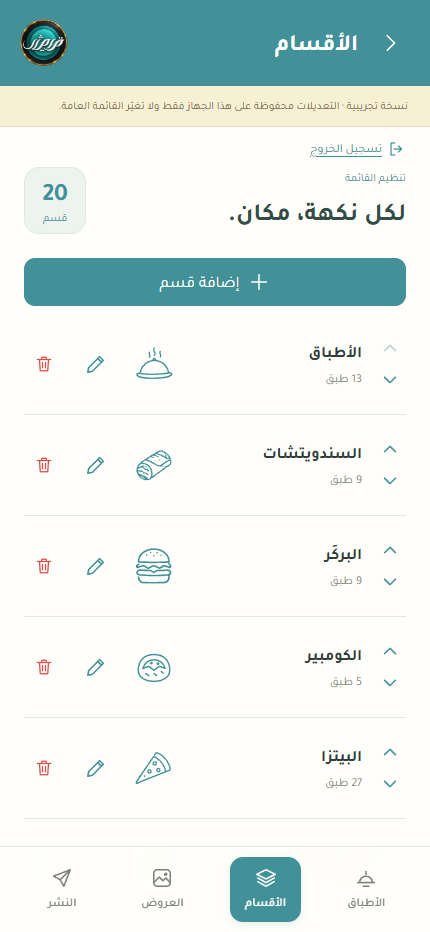
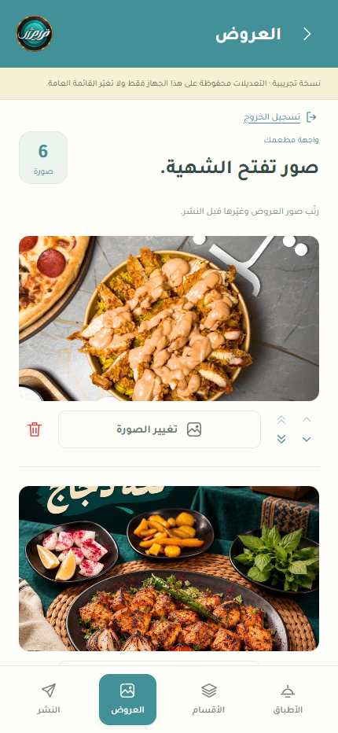

دليل الموظفين · آخر تحديث: 2026-11-04
إدارة قائمة قراميش
تعديل الأطباق والأقسام والعروض، ثم مراجعة التغييرات ونشرها للعملاء.
حفظ المسودة لا ينشر القائمة. تظهر التغييرات للعملاء بعد «نشر التغييرات» وتأكيد النشر فقط.
للحفظ كملف PDF: افتح هذا الملف في المتصفح، واضغط الزر أعلاه، ثم اختر «حفظ بتنسيق PDF».
الصور أدناه من الواجهة الحالية في جلسة تجريبية معزولة. قد تختلف الأطباق والأسعار والأعداد عن قائمتكم الفعلية. عبارة «نسخة تجريبية» في الصور تخص جلسة التصوير فقط، ولم تُعدّل القائمة الحقيقية أثناء إعداد الدليل.
1. تسجيل الدخول والتعرّف على الشاشة
- افتح موقع المطعم، ثم «دخول الموظفين» أسفل الصفحة، أو افتح /admin على نفس الموقع.
- أدخل بريدك الإلكتروني وكلمة المرور المخصصين لك. لا تشارك كلمة المرور.
- استخدم الشريط السفلي للتنقل بين «الأطباق»، «الأقسام»، «العروض»، و«النشر».
- اضغط «تسجيل الخروج» عند الانتهاء، خصوصاً على الأجهزة المشتركة.
زر التحديث قرب تسجيل الخروج يحمّل أحدث مسودة. إذا ظهرت رسالة تأكيد، اقرأها قبل المتابعة حتى لا تفقد تعديلاتك المحلية.
المسودة مشتركة بين الموظفين. نسّق مع الفريق قبل تعديل القائمة، خصوصاً عند النشر أو استعادة نسخة قديمة.
2. الأطباق: التعديل والتوفر والترتيب
- افتح «الأطباق»، ثم اختر القسم أو ابحث عن اسم الطبق.
- اضغط الصورة أو الاسم أو السعر أو رمز القلم لفتح تفاصيل الطبق.
- لإضافة طبق، اضغط «إضافة طبق».
التوفر والحذف
المفتاح بجانب الطبق يغيّر حالة التوفر في المسودة. رمز سلة المهملات يحذف الطبق من المسودة بعد التأكيد. راجع التغيير وانشره ليظهر للعملاء.
ترتيب الأطباق داخل القسم
- السهم المفرد ينقل الطبق خطوة واحدة لأعلى أو لأسفل.
- السهم المزدوج ينقله إلى أول قسمه أو آخره، مع طلب تأكيد.
- امسح البحث لتفعيل أسهم الترتيب. السهم المعطّل يعني أن النقل غير متاح، مثلاً لأن الطبق في أول القسم بالفعل.
ترتيب الطبق يخص قسمه. لن ينقله السهم إلى قسم آخر؛ غيّر «القسم» من شاشة تعديل الطبق لذلك.

3. حفظ تفاصيل الطبق ورفع صورته
- أدخل اسم الطبق والسعر بالدينار العراقي، واختر القسم المناسب. مثلاً: 10000.
- أكمل الحجم والوصف المختصر والوصف والإضافات عند الحاجة.
- لتبديل الصورة، اضغط «تغيير الصورة» واختر صورة من الجهاز. انتظر انتهاء المعالجة والرفع والحفظ.
- اضغط «حفظ المسودة» لحفظ تفاصيل النموذج. «إلغاء» يلغي تغييرات النموذج غير المحفوظة.
- افتح «النشر» لمراجعة النتيجة قبل إظهارها للعملاء.
ما الصور المقبولة؟
صور PNG / JPG / WebP، بحد أقصى 25 MB و40 مليون بكسل للصورة الأصلية. تُصغّر الصورة وتُضغط تلقائياً، وتُخزّن بصيغة WebP بحجم لا يتجاوز 500 KB.
يمكن استخدام لقطات شاشة iPhone بهذه الصيغ ضمن الحدود. قصّ شريط الهاتف والمساحات غير المطلوبة قبل الرفع للحصول على صورة أجمل.
إذا ظهرت رسالة رفع أو حفظ فاشل، لا تفترض أن الصورة حُفظت. انتظر زوال حالة التحميل، ثم أعد المحاولة وتحقق من المسودة.

4. إدارة الأقسام والأيقونات
- افتح «الأقسام»، ثم «إضافة قسم» أو رمز القلم بجانب قسم موجود.
- اكتب اسم القسم واختر أيقونة جاهزة، ثم اضغط «حفظ المسودة».
- استخدم أسهم الأقسام لتغيير ترتيب ظهورها، ثم راجع وانشر التغييرات.
لا يمكن حذف قسم يحتوي على أطباق؛ انقل أطباقه إلى قسم آخر أو احذفها أولاً، ثم احذف القسم.
رفع أيقونة مخصصة مؤجل حالياً. الأيقونات الجاهزة تبقى متاحة للاختيار حتى لو لم يستخدمها أي قسم.

عرض شاشة قائمة الأقسام

5. صور العروض في الصفحة الرئيسية
- افتح «العروض».
- اضغط «تغيير الصورة» أسفل الصورة المطلوبة، أو «إضافة صورة» أسفل القائمة لإضافة عرض.
- انتظر انتهاء الرفع والحفظ، ثم تحقق من الصورة الجديدة.
- رتّب الصور بالأسهم. المفرد ينقل خطوة واحدة، والمزدوج ينقل إلى أول العروض أو آخرها بعد التأكيد.
- لحذف صورة من العروض، اضغط سلة المهملات وأكّد الحذف.
- راجع المسودة من «النشر»، ثم انشرها.
حذف الصورة من العروض لا يعني مسح ملفها فوراً من التخزين؛ قد تحتاجه نسخة نشر قديمة.

6. المراجعة والمعاينة والنشر
- تأكد من حفظ أي نموذج مفتوح، ثم افتح «النشر».
- راجع قائمة التغييرات، خصوصاً الأسعار والتوفر والحذف وترتيب الأطباق والعروض.
- اضغط «معاينة» لرؤية المسودة قبل نشرها. استخدم «العودة إلى الإدارة» للرجوع.
- إذا كانت النتيجة صحيحة، اضغط «نشر التغييرات»، ثم «تأكيد النشر».
- انتظر رسالة «تم النشر بنجاح. القائمة العامة محدّثة.»، ثم افتح الصفحة العامة للتحقق، ويفضل من هاتف آخر أيضاً.
النشر يشمل جميع التغييرات المحفوظة في المسودة المشتركة، بما فيها تغييرات الموظفين الآخرين. المعاينة وحدها لا تنشر شيئاً.
الإشعار الأخضر يدل على نجاح العملية. الأصفر للتنبيه أو المعلومات التي تحتاج انتباهك. الرسائل تظهر مؤقتاً أسفل الرأس؛ اقرأ نص الرسالة لتعرف حالة العملية.
7. استعادة نسخة منشورة سابقة
- من «النشر»، افتح «سجل النشر / استعادة نسخة».
- اختر النسخة المطلوبة حسب رقمها وتاريخها، ثم «استعادة كمسودة» وأكّد.
- راجع التغييرات وافتح المعاينة.
- انشر المسودة فقط إذا أردت عرض هذه النسخة للعملاء.
الاستعادة تستبدل المسودة الحالية بالقائمة الكاملة وقت تلك النسخة. نسّق مع الفريق قبل التأكيد. لا تتغير القائمة المنشورة حتى تنشر المسودة.
قد تنجح الاستعادة دون فرق مرئي إذا كانت النسخة المختارة مطابقة للمسودة أو القائمة المنشورة. نسخ السجل تمثل عمليات نشر، وليست كل تعديل منفرد.
8. عند حدوث مشكلة
| المشكلة | ما الذي تفعله؟ |
|---|---|
| لا أستطيع تسجيل الدخول | تحقق من البريد وكلمة المرور. اطلب من مسؤول الموقع مراجعة صلاحية حسابك أو مساعدتك في استعادة الدخول. |
| يطلب حفظ التعديل قبل الانتقال | احفظ النموذج أو ألغِه، ثم انتقل إلى الشاشة الأخرى. |
| تعارض مع تعديل موظف آخر | لا تكرر الحفظ عشوائياً. استخدم «حفظ نسخة من تعديلاتي» إن ظهر، ثم حمّل أحدث مسودة ونسّق مع الموظف الآخر قبل إعادة التعديل. |
| تعذر رفع الصورة | تحقق من الاتصال، وجرّب JPG أو PNG أو WebP أصغر أو مقصوصة. انتظر انتهاء المحاولة. إذا تكرر الخطأ على أكثر من جهاز، تواصل مع مسؤول الموقع وأرسل نص الرسالة. |
| تعذر حفظ المسودة أو تأكيد النشر | احتفظ بالصفحة مفتوحة واقرأ أزرار الاسترداد الظاهرة. عند تعذر تأكيد النشر، حمّل أحدث مسودة للتحقق من الحالة قبل تكرار النشر. |
| التغيير لا يظهر على هاتف آخر | تأكد أنك نشرت ولم تحفظ فقط، وأن الجهازين يستخدمان رابط الموقع نفسه. حدّث الصفحة العامة. إذا استمرت المشكلة، أرسل الرابط ووقت النشر لمسؤول الموقع. |
9. تقارير الصور والمتابعة
في شاشة «النشر» يوجد تقرير «مراجعة الصور غير المستخدمة» وتقرير «استخدام مساحة الصور».
- مراجعة الصور غير المستخدمة: فحص فقط؛ لا يحذف الملفات. ظهور 0 مرشحين طبيعي عندما تكون الصور محمية أو حديثة.
- استخدام مساحة الصور: اضغط «تحديث الاستخدام» لمعرفة العدد والحجم المعروف وأكبر صورة. هذا ليس الاستخدام الكامل للحساب؛ مسؤول الموقع يراجع حدود الخدمات من لوحاتها.
- النسخ الاحتياطية: النسخ الأسبوعية مسؤولية مسؤول المشروع. سجل النشر داخل التطبيق مختلف عن النسخة الاحتياطية الخارجية.
عند تسليم الوردية: تأكد من حفظ العمل، واتفق مع الفريق إن كانت هناك مسودة تنتظر النشر، ثم سجّل الخروج.